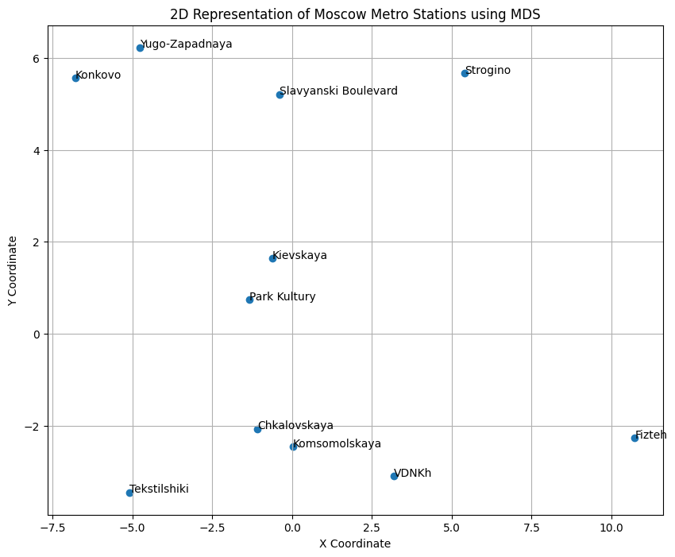
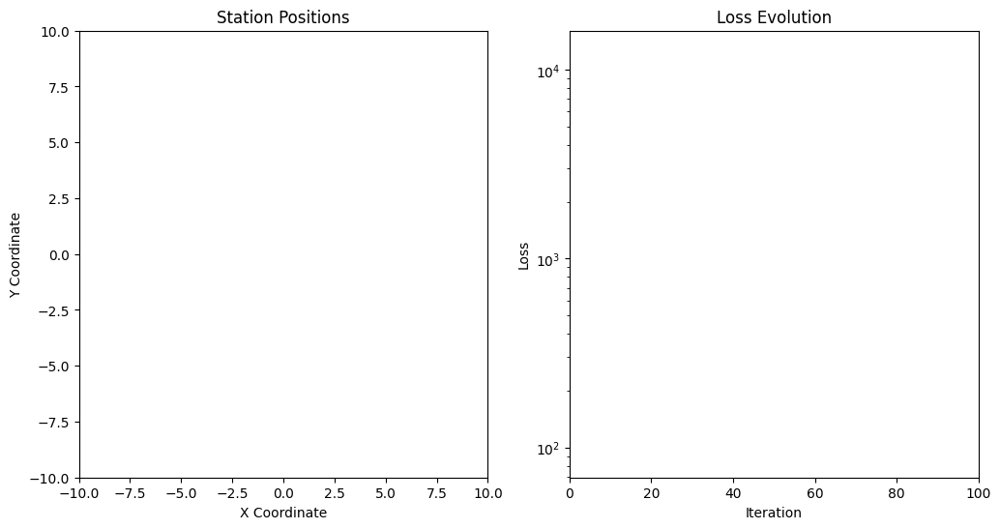

!pip install -q geopy
[notice] A new release of pip is available: 23.2.1 -> 23.3.2
[notice] To update, run: python3.9 -m pip install --upgrade pip
[notice] A new release of pip is available: 23.2.1 -> 23.3.2
[notice] To update, run: python3.9 -m pip install --upgrade pipimport numpy as np
from geopy.distance import geodesic
# Estimated GPS coordinates for the specified Moscow Metro stations
# Format: "Station Name": (Latitude, Longitude)
stations_coordinates = {
"Fizteh": (55.5518, 37.3247), # Estimated coordinates for Fizteh
"Chkalovskaya": (55.4523, 37.3926),
"Slavyanski Boulevard": (55.4347, 37.2814),
"Park Kultury": (55.4409, 37.3529),
"Komsomolskaya": (55.4629, 37.3918),
"Yugo-Zapadnaya": (55.3949, 37.2900),
"Kievskaya": (55.4440, 37.3356),
"Strogino": (55.4814, 37.2411),
"Konkovo": (55.3800, 37.3108),
"VDNKh": (55.4916, 37.3828),
"Tekstilshiki": (55.4232, 37.4354)
}
# Calculate the pairwise distance matrix
def calculate_distance_matrix(coords_dict):
station_names = list(coords_dict.keys())
n_stations = len(station_names)
distance_matrix = np.zeros((n_stations, n_stations))
for i in range(n_stations):
for j in range(n_stations):
if i != j:
distance_matrix[i][j] = geodesic(coords_dict[station_names[i]], coords_dict[station_names[j]]).kilometers
else:
distance_matrix[i][j] = 0
return station_names, distance_matrix
station_names, distance_matrix = calculate_distance_matrix(stations_coordinates)
distance_matrix, station_names
(array([[ 0. , 11.8795683 , 13.32121955, 12.47476534, 10.76730899,
17.60531703, 12.02141556, 9.45093857, 19.14704757, 7.64111262,
15.93607716],
[11.8795683 , 0. , 7.30513134, 2.81466242, 1.18120326,
9.11269391, 3.72338261, 10.11508331, 9.57219188, 4.41903113,
4.22314047],
[13.32121955, 7.30513134, 0. , 4.57796148, 7.6589319 ,
4.46432896, 3.58332329, 5.79065187, 6.36819994, 9.01496207,
9.83338314],
[12.47476534, 2.81466242, 4.57796148, 0. , 3.47233987,
6.48795948, 1.14799012, 8.3873321 , 7.28559471, 5.95292621,
5.58202776],
[10.76730899, 1.18120326, 7.6589319 , 3.47233987, 0. ,
9.94233619, 4.13173454, 9.75035755, 10.55879981, 3.24552038,
5.21047455],
[17.60531703, 9.11269391, 4.46432896, 6.48795948, 9.94233619,
0. , 6.18218626, 10.11534229, 2.11882318, 12.26352411,
9.73385562],
[12.02141556, 3.72338261, 3.58332329, 1.14799012, 4.13173454,
6.18218626, 0. , 7.28489644, 7.29627254, 6.08240265,
6.72859259],
[ 9.45093857, 10.11508331, 5.79065187, 8.3873321 , 9.75035755,
10.11534229, 7.28489644, 0. , 12.12071314, 9.02961058,
13.89681105],
[19.14704757, 9.57219188, 6.36819994, 7.28559471, 10.55879981,
2.11882318, 7.29627254, 12.12071314, 0. , 13.23410172,
9.24357874],
[ 7.64111262, 4.41903113, 9.01496207, 5.95292621, 3.24552038,
12.26352411, 6.08240265, 9.02961058, 13.23410172, 0. ,
8.31043471],
[15.93607716, 4.22314047, 9.83338314, 5.58202776, 5.21047455,
9.73385562, 6.72859259, 13.89681105, 9.24357874, 8.31043471,
0. ]]),
['Fizteh',
'Chkalovskaya',
'Slavyanski Boulevard',
'Park Kultury',
'Komsomolskaya',
'Yugo-Zapadnaya',
'Kievskaya',
'Strogino',
'Konkovo',
'VDNKh',
'Tekstilshiki'])import matplotlib.pyplot as plt
def gradient_descent_mds(D, dimensions=2, learning_rate=0.01, iterations=1000):
"""
Perform Multidimensional Scaling using Gradient Descent.
:param D: NxN distance matrix.
:param dimensions: Number of dimensions for the output coordinates.
:param learning_rate: Learning rate for gradient descent.
:param iterations: Number of iterations.
:return: Nx2 matrix of coordinates.
"""
N = D.shape[0]
# Random initialization of coordinates
X = np.random.rand(N, dimensions)
for iteration in range(iterations):
# Compute distance matrix for current coordinates
D_hat = np.sqrt(np.sum((X[:, np.newaxis, :] - X[np.newaxis, :, :]) ** 2, axis=2))
# Compute gradient
delta = D_hat - D
for i in range(N):
for j in range(N):
if i != j:
grad = (delta[i, j] / D_hat[i, j]) * (X[i, :] - X[j, :])
X[i, :] -= learning_rate * grad
return X
# Perform MDS
coordinates_mds = gradient_descent_mds(distance_matrix)
# Plotting the results
plt.figure(figsize=(10, 8))
plt.scatter(coordinates_mds[:, 0], coordinates_mds[:, 1])
for i, name in enumerate(station_names):
plt.annotate(name, (coordinates_mds[i, 0], coordinates_mds[i, 1]))
plt.title("2D Representation of Moscow Metro Stations using MDS")
plt.xlabel("X Coordinate")
plt.ylabel("Y Coordinate")
plt.grid(True)
plt.show()
import numpy as np
import matplotlib.pyplot as plt
import matplotlib.animation as animation
from geopy.distance import geodesic
# Estimated GPS coordinates for the specified Moscow Metro stations
stations_coordinates = {
"Fizteh": (55.5518, 37.3247),
"Chkalovskaya": (55.4523, 37.3926),
"Slavyanski Boulevard": (55.4347, 37.2814),
"Park Kultury": (55.4409, 37.3529),
"Komsomolskaya": (55.4629, 37.3918),
"Yugo-Zapadnaya": (55.3949, 37.2900),
"Kievskaya": (55.4440, 37.3356),
"Strogino": (55.4814, 37.2411),
"Konkovo": (55.3800, 37.3108),
"VDNKh": (55.4916, 37.3828),
"Tekstilshiki": (55.4232, 37.4354)
}
# Calculate the pairwise distance matrix
def calculate_distance_matrix(coords_dict):
station_names = list(coords_dict.keys())
n_stations = len(station_names)
distance_matrix = np.zeros((n_stations, n_stations))
for i in range(n_stations):
for j in range(n_stations):
if i != j:
distance_matrix[i][j] = geodesic(coords_dict[station_names[i]], coords_dict[station_names[j]]).kilometers
else:
distance_matrix[i][j] = 0
return station_names, distance_matrix
station_names, distance_matrix = calculate_distance_matrix(stations_coordinates)
# Gradient Descent MDS with data collection for animation
def gradient_descent_mds(D, dimensions=2, learning_rate=0.01, iterations=1000):
N = D.shape[0]
X = np.random.rand(N, dimensions)
# Records for animation
positions_record = []
loss_record = []
for iteration in range(iterations):
D_hat = np.sqrt(np.sum((X[:, np.newaxis, :] - X[np.newaxis, :, :]) ** 2, axis=2))
delta = D_hat - D
loss = np.sum(delta**2) # Loss calculation
positions_record.append(X.copy())
loss_record.append(loss)
# Gradient descent update
for i in range(N):
for j in range(N):
if i != j:
grad = (delta[i, j] / D_hat[i, j]) * (X[i, :] - X[j, :])
X[i, :] -= learning_rate * grad
return positions_record, loss_record
# Perform MDS and collect data for animation
positions_record, loss_record = gradient_descent_mds(distance_matrix, iterations=100)
# Function to update each frame in the animation
def update_frame(num, positions_record, loss_record, station_names, scat, line, ax1, ax2):
# Clear previous station labels and tails
ax1.clear()
ax1.set_xlim(-10, 10)
ax1.set_ylim(-10, 10)
ax1.set_title('Station Positions')
ax1.set_xlabel('X Coordinate')
ax1.set_ylabel('Y Coordinate')
# Update station positions and draw tails
scat.set_offsets(positions_record[num])
for i, name in enumerate(station_names):
# Draw the tail for each station
if num > 0:
for past in range(num):
ax1.plot([positions_record[past][i, 0], positions_record[past+1][i, 0]],
[positions_record[past][i, 1], positions_record[past+1][i, 1]],
color='gray', alpha=0.5)
# Label the final position of the station
if num == len(positions_record) - 1:
ax1.text(positions_record[num][i, 0], positions_record[num][i, 1], name, fontsize=8)
# Update loss evolution plot
line.set_data(range(num + 1), loss_record[:num + 1])
ax2.set_xlim(0, 100)
ax2.set_ylim(min(loss_record), max(loss_record))
ax2.set_title('Loss Evolution')
ax2.set_xlabel('Iteration')
ax2.set_ylabel('Loss')
return scat, line
# Create the figure for animation
fig, (ax1, ax2) = plt.subplots(1, 2, figsize=(12, 6))
# Scatter plot for station positions
scat = ax1.scatter([], [], s=30)
ax1.set_xlim(-10, 10)
ax1.set_ylim(-10, 10)
ax1.set_title('Station Positions')
ax1.set_xlabel('X Coordinate')
ax1.set_ylabel('Y Coordinate')
# Line plot for loss evolution
line, = ax2.semilogy([], [], lw=2)
ax2.set_xlim(0, 100)
ax2.set_ylim(min(loss_record), max(loss_record))
ax2.set_title('Loss Evolution')
ax2.set_xlabel('Iteration')
ax2.set_ylabel('Loss')
# Creating the animation
ani = animation.FuncAnimation(fig, update_frame, frames=100, fargs=(positions_record, loss_record, station_names, scat, line, ax1, ax2), blit=False, repeat=False)
# Saving the animation
ani.save('moscow_metro_mds_animation.mp4', writer='ffmpeg', fps=10)
array([[ 8.02981262, 8.63001461],
[ 2.25518938, -2.67734712],
[-3.33834951, 1.74376926],
[-0.07801013, -1.44497825],
[ 3.09715112, -2.01602395],
[-6.46246911, -1.07594008],
[-0.48882653, -0.35399986],
[-1.32473107, 7.16441546],
[-6.86842661, -3.2663034 ],
[ 5.7281098 , 1.15859194],
[ 4.50067386, -4.182293 ]])